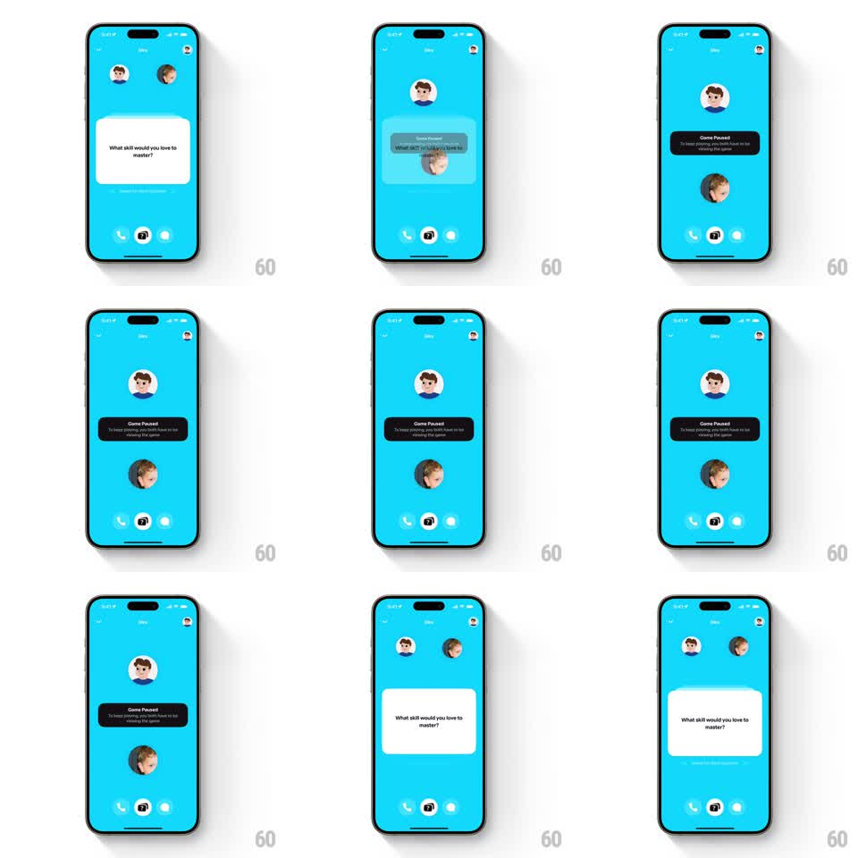

Media
Frame-by-frame

Rebuild this interaction 1:1: Honk's icebreaker pause - when activity stops, the question card shrinks and dims, the two avatars spring apart, and a "Game Paused" pill explains both players must be viewing; on return, everything springs back into place.

Rebuild this interaction 1:1: Honk's icebreaker pause - when activity stops, the question card shrinks and dims, the two avatars spring apart, and a "Game Paused" pill explains both players must be viewing; on return, everything springs back into place.
## Integration
Integration: stack-agnostic spec - springs given as stiffness/damping, timed motions as duration + curve; map every value to your framework and animation library of choice.
## Scene
Blue in-call screen: two avatars near the top-center, a white question card ("What skill would you love to master?") below them, call controls at the bottom. Paused state: the card scaled down and ghosted behind the top avatar, avatars separated (one above, one below the card zone), a black "Game Paused" pill ("To keep playing, you both have to be viewing the game") between them.
## Motion spec
Pattern: springy pause disassembly and reassembly.
- Pause trigger (inactivity): the question card scales down (1 -> 0.75, spring ~300/20) and dims (opacity 0.4, slight blur) as it drifts up behind the top avatar; the avatars separate vertically to their paused slots (springs ~280/22, 350ms).
- The "Game Paused" pill scales in at center (scale 0.7 -> 1.05 -> 1, spring ~340/14), black with white text.
- The whole paused layout idles with a slow breathe (translateY +-3pt, 2.5s).
- Resume (either player returns): the pill shrinks out (150ms), the card springs back to full size and opacity (spring ~300/20), and the avatars slide back together (springs, 350ms) - all overlapping for a snap-back feel.
## Calibration
- Paused motion is gentle and low-energy; resume is quick and springy - the contrast carries the meaning.
- The card stays legible but clearly inactive (dimmed) while paused.
## Reduced motion
States crossfade (300ms); no springs.
## Don't miss
- The pill names the condition: "To keep playing, you both have to be viewing the game".
- Call controls stay live in both states.